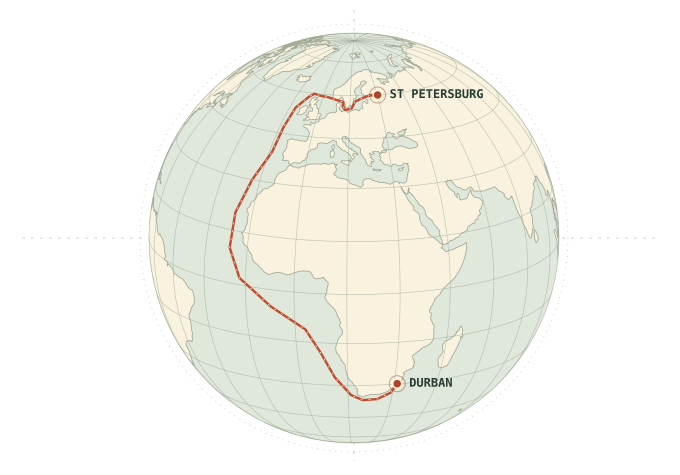

Сооснователь / СНГ
Евгений Пресняков
Инвестор в производственные предприятия и добычу. В проект приносит опыт работы с промышленными компаниями и заказчиками в СНГ.
Mentor ClubВам нужен весь маршрут или только доставка из порта? Укажите, где начинается и заканчивается наш участок. Возможность перевозки проверяем под конкретный груз.


Отправитель, порт и получатель редко находятся в одном городе. Сначала определяем, где забрать груз и до какой точки считать доставку.
На карте — пример, не расписание линии. Порты, перевалки и доступность рейса проверяем под ваш груз.
Начать запрос по маршрутуДля расчёта нужны адрес поставщика и конечный пункт. В предложении указываем морской и наземные участки, портовые сборы и кто отвечает за оформление груза.
Если у вас уже есть морской фрахт, можно запросить только доставку из порта. И наоборот: если поставщик сам довезёт груз до терминала, начнём расчёт оттуда.
Если поставщика ещё нет, начнём со спецификации. Обсудим товар, объём и условия закупки, затем отдельно посчитаем доставку.
Евгений и Тим объединили опыт работы с промышленными заказчиками в СНГ и с перевозчиками в Африке.
Инвестор в производственные предприятия и добычу. В проект приносит опыт работы с промышленными компаниями и заказчиками в СНГ.
Mentor ClubРаботает в международной логистике и сырьевой торговле. В проекте занимается африканским участком маршрута: от запроса грузоотправителя до обсуждения условий с перевозчиком.
AsymVestДостаточно двух точек маршрута и описания груза. Если знаете вес партии, условия поставки и дату готовности, добавьте их в запрос.
Черновик останется у вас. Сайт не собирает данные о перевозках.